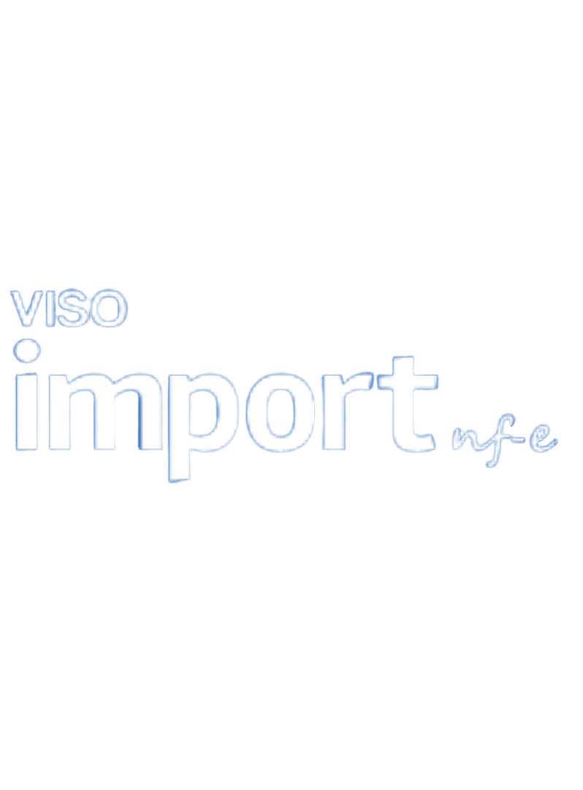

Soluções inteligentes, educação especializada e ferramentas avançadas de IA para transformar as operações de exportação e importação da sua empresa com segurança e compliance.

A Visonet é referência em tecnologia para Comércio Exterior,
atendendo empresas de todos os portes — exportadoras,
importadoras, despachantes aduaneiros e profissionais que
atuam diretamente na rotina das operações internacionais.
Com um portfólio de soluções próprias e serviços especializados,
combinamos tecnologia e IA para simplificar processos, aumentar
a eficiência e dar mais segurança às decisões do dia a dia,
reduzindo retrabalho, acelerando entregas e automatizando tarefas.
Na prática, isso se traduz em ferramentas e serviços que apoiam
as rotinas de Exportação, Importação e Drawback, desde automações
e padronizações até sistemas completos. Nosso VISODrawback permite
obter benefícios aos clientes, reduzindo custos de insumos. O
REINTEGRA nos possibilita o retorno de tributos pagos na exportação.
O VISODUE, oferece uma solução eficiente e prática para a elaboração
da DUE (Declaração Única de Exportação). O GESPRO garante a gestão
de produtos com foco nos certificados de origem. Nosso VISOImportNFE
permite a geração automatizada e personalizada do XML da NF-e e do XML
da DI. Para capacitação e evolução contínua, contamos com o VISO EDU,
nossa plataforma de ensino, e com o software COMEXLABS, oferecemos simuladores
de Exportação, Importação e Drawback. Já o Catálogo de Produtos é a
nova base de dados para o novo processo da DUIMP e o SPED para Exportação
possibilita uma comunicação direta com a Receita Federal diante das
obrigações fiscais.
Tudo isso com suporte dedicado e foco em resultado — para você transformar
suas rotinas e ganhar performance no Comércio Exterior e em seus negócios.